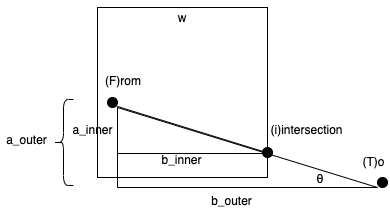

Table of Contents
1 Grocery Store Spree
1.1 Problem
Consider the following map of a grocery store:
+----------------------------------------------------------------------------------------------------------------------+ | Meat | |Milk | | +-+ +-+ +-+ Seafood| | |*| |*| |*| +--------------+ | | |*| |*| |*| | | | | |*| |*| |*| |Potatoes | | | |*| |*| Salt|*| | | | |Cheese |*|ToiletPaper |*| |*| +--------------+ | | |*| |*| |*|Cilantro | | |*| |*| |*| | |Eggs |*| |*|Mustard +-+ |*| | | |*| |*| |*| |*| | | |*| |*| |*| |*| +-----------+ +-----------+ | | |*| |*| Sunscreen|*| |*| | | | | | | |*| |*| |*| |*| |Onions | |Garlic | | | |*| |*| |*| |*| | | | | | | |*| |*| |*| |*| | | | | | | |*| |*| |*| |*| +-----------+ +-----------+ | | +-+ +-+ +-+ +-+ | | | | | | | | +-------------------------+ | | | | | | |Alcohol | | | | | | +----------------------------------------------------------------------------------------------------------------------+
The top left-most corner is at position row=0, column=0
1.1.1 Challenge 1
Parse the map above to determine the location of each word as a (row,column) tuple
1.1.2 Challenge 2
The position of an item is determined by
- The location of its first capital letter
- Unless it bumps up against a wall on the right (eg Seafood, Salt) in which case it is the location is that of its last letter
1.1.3 Challenge 3
Which items are line of sight to each other? Shelves (asterisk-filled) block line of sight but bins do not.
1.2 Challenge 1 - Location of Words
The idea here is pretty simple actually since all text is horizontal, just read in all instances of words in each line while keeping track of rows. Simplest way to find a word in a line - regex.
from re import finditer from typing import List def get_products_and_positions(chart: List[str]): for r,line in enumerate(chart): try: for m in finditer('[A-Z]\w+', line): yield (m.group(), r, m.start(0)) except ValueError: pass chart = (l.strip() for l in """ <<grocery-store-chart>> """.strip().split('\n')) return list(get_products_and_positions(chart))
| Meat | 1 | 19 |
| Milk | 2 | 1 |
| Seafood | 3 | 112 |
| Potatoes | 6 | 78 |
| Salt | 7 | 57 |
| Cheese | 8 | 1 |
| ToiletPaper | 8 | 14 |
| Cilantro | 9 | 64 |
| Eggs | 11 | 1 |
| Mustard | 11 | 32 |
| Sunscreen | 14 | 39 |
| Onions | 15 | 76 |
| Garlic | 15 | 100 |
| Alcohol | 25 | 3 |
1.3 Challenge 2 - Location of Items
Similar idea but we want to know whether the word ends in a wall (| character) or not.
from re import finditer from typing import List def get_products_and_positions(chart: List[str]): for r,line in enumerate(chart): try: for m in finditer('[A-Z]\w+\|?', line): c = m.start(0) if not m.group().endswith('|') else (m.end(0) - 1) yield (m.group().strip('|'), r, c) except ValueError: pass chart = (l.strip() for l in """ <<grocery-store-chart>> """.strip().split('\n')) return list(get_products_and_positions(chart))
| Meat | 1 | 19 |
| Milk | 2 | 1 |
| Seafood | 3 | 119 |
| Potatoes | 6 | 78 |
| Salt | 7 | 61 |
| Cheese | 8 | 1 |
| ToiletPaper | 8 | 14 |
| Cilantro | 9 | 64 |
| Eggs | 11 | 1 |
| Mustard | 11 | 32 |
| Sunscreen | 14 | 48 |
| Onions | 15 | 76 |
| Garlic | 15 | 100 |
| Alcohol | 25 | 3 |
1.4 Challenge 3 - Line of Sight
1.4.1 What is Line of Sight?
So firstly I guess we need to consider what line of sight actually is when the space is two dimensional and discrete. For example lets say we're going from cell F to cell T, what cells are in our line of sight?
+-----+-----+-----+-----+-----+-----+-----+ | | | | | | | | +-----+-----+-----+-----+-----+-----+-----+ | F | | | | | | | +-----+-----+-----+-----+-----+-----+-----+ | | | | | | | | +-----+-----+-----+-----+-----+-----+-----+ | | | | | | | T | +-----+-----+-----+-----+-----+-----+-----+
What I think I would like to do is to draw a natural (non-discrete) line from the mid-point of F to the mid-point of T. We can consider every square that line passes through to be a part of its line of sight (since anything occupying that cell is considered to block path through any part of that cell.
+-----+-----+-----+-----+-----+-----+-----+ | | | | | | | | +-----+-----+-----+-----+-----+-----+-----+ |■■F■■|■■■■■| | | | | | +-----+-----+-----+-----+-----+-----+-----+ | |■■■■■|■■■■■|■■■■■|■■■■■| | | +-----+-----+-----+-----+-----+-----+-----+ | | | | |■■■■■|■■■■■|■■T■■| +-----+-----+-----+-----+-----+-----+-----+
1.4.2 Calculate point of intersection
Ok, so we're going to need a way of walking along a path and announcing which cells we enter. To do that, we need to be able to tell were a line from an arbitrary point in a square to a point outside of it will intersect the square.
0,0 +-----------------------+ | | | | | F | | | |w | | | | | | w |i +-----------------------+ . T
So on the line from F to T, what is the location at the intersection point i
So for the time being let's assume that we know that the intersection point will be on the right-most wall.
If we draw a right angle triangle from F to T it should pass through that point

So we know that \(x_i = w\). This means that what we want to solve for is \(y_i\) so we have
\begin{equation} a_{outer}=y_T - y_F \\ b_{outer}=x_T - x_F \\ b_{inner}=w-x_F \\ θ=\arctan{\frac{a_{outer}}{b_{outer}}} \\ \tan(θ) = \frac{a_{inner}}{b_{inner}} \\ a_{inner} = b_{inner} \tan{θ} \\ a_{inner} = (w-x_F) {\tan{θ}} \\ a_{inner} = (w-x_F) {\frac {a_{outer}} {b_{outer}}} \\ a_{inner} = (w-x_F) {\frac {y_T - y_F} {x_T - x_F}} \\ y_i = y_F + a_{inner} \\ y_i = y_F + (w-x_F) \frac {y_T - y_F} {x_T - x_F} \\ \end{equation}Let's do a sanity check here.
| Square Width | 10 |
| F(rom) | (2,7) |
| T(o) | (15, 11) |
| (i)ntersection approximation | about (10, 9) |
| (i)ntersection calculated | \((10, 7 + (10-2) \frac {11-7} {15-2}) = 9.4615\) |
That looks right!
1.4.3 Find wall intersected
Consider the triangle from the previous section again. Without having someone eyeball it, how can we know which side is being crossed?
We know the ratio between the sides of inner triangle and outer triangle must be true
\begin{equation} \frac{a_{outer}}{b_{outer}} = tan{θ} \\ \frac{a_{inner}}{b_{inner}} = tan{θ} \\ \frac{a_{inner}}{b_{inner}} = \frac{a_{outer}}{b_{outer}} \\ \end{equation}If crossing the right side, \(b_{inner}\) is known but \(a_{inner}\) is not.
\begin{equation} a_{inner} = b_{inner}\frac{a_{outer}}{b_{outer}} \end{equation}If crossing the bottom side, \(b_{inner}\) is not known but \(a_{inner}\) is.
\begin{equation} b_{inner} = a_{inner}\frac{b_{outer}}{a_{outer}} \end{equation}I believe that if we do both calculations, one will place the intersection outside of the bounds of our containing square so we know it intersects the other wall. If both work then it intersects at the corner exactly. Lets try this out too.
| Side/Edge | \(x_F\) | \(y_F\) | \(x_T\) | \(y_T\) | \(a_{outer}\) | \(b_{outer}\) | \(b_{inner}\) assuming | \(ainner} assuming | Conclusion |
|---|---|---|---|---|---|---|---|---|---|
w=10 |
\(a_{inner}\) known | \(b_{inner}\) known | |||||||
| Bottom | 8 | 7 | 12 | 15 | 8 | 4 | 3.999 | Bottom as \(8+a_{inner} > w\) | |
| 8 | 7 | 20 | 15 | 8 | 12 |